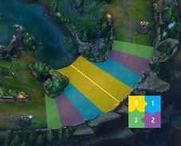

Selon moi, la raison pour laquelle je suis la crème de la crème ne se résume ni au skill ni à mon équipe, mais cela est vraiment dûe à ma connaissance de ma lane me permettant de prendre des fights avantageux dans tous les cas malgré le fait que je demeure souvent en weakside et que la pression est forte sur moi. Vous me demanderez peut être comment avoir une bonne connaisance de la toplane et pour moi cela se résume au wave management et c'est sur ce principe que je rafle tous les trophés.
Couvrons tout d’abord les bases. Les vagues de sbire spawn toutes les 30 secondes, amenant 6 sbires sur chaque ligne, 3 d’entre eux étant des mêlées et les 3 autres des casters. Toutes les 3 vagues se rajoute un sbire canon, plus gros. Les vagues de sbires sont en parfaite symétrie pour chaque champ, ainsi si votre prochaine vague se trouve au niveau de votre deuxième tour (T2), alors les prochains sbires de votre adversaire se trouvent également au niveau de sa T2. C’est à peu près tout ce qu’il faut savoir comme base pour la bonne compréhension de cet article. Mais avant de nous lancer dans le vif du sujet, je vais également revenir sur quelques termes à connaître, puisque j’y référerai souvent par la suite : Reset de vague : La prochaine vague de sbires à arriver rencontrera la vague ennemie au milieu de la lane, comme s’il s’agissait de la première vague (plus de détails seront abordés plus tard sur ce sujet). Vagues Égales : Terme faisant référence au nombre de sbires sur une lane, et signifiant que ce nombre est strictement identique pour chaque camp tant en nombre, en points de vie et en type (mêlée, caster, canon). Vagues Inégales : Par opposition, il s’agit de vagues déséquilibrées en nombre, points de vie et/ou type. Vague formée : Réfère à une vague de sbires se trouvant déjà en formation de bataille, avec les 3 sbires mêlée en première ligne et les 3 sbires caster en formation de combat à l’arrière. Vague en formation : A l’inverse, réfère à une vague de sbires encore alignés et en mouvement sur la lane. Vague de renfort : Il s’agit de la prochaine vague de sbires en approche, la vague qui viendra donc « renforcer » celle en cours. C'est tout pour la terminologie dont nous avons besoin, le reste étant bien plus commun à comprendre. Il n’y a finalement que deux types de vagues de sbires : les vagues qui sont égales, et les vagues qui sont inégales en faveur d’un camp ou de l’autre. Chaque type de vague, égale ou inégale, suit des règles bien précises qui lui sont propres.
